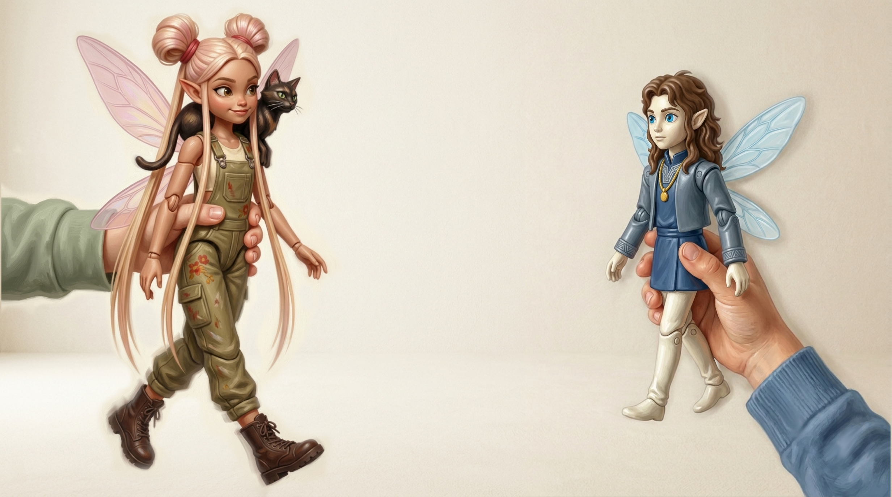

Pan pan pan,
pin pin pin,
pon pon pon,
pun pun pun !
— Pan pan pan, pin pin pin, pon pon pon, pun pun pun !
¡Ahora le toca a Zyeu-Bleu! Él tampoco está diciendo nada con sentido — solo le responde a Nagar con el mismo espíritu juguetón, sonido por sonido.
(Fíjate en las cuatro vocales: pan, pin, pon, pun — cada una es una vocal nasal francesa distinta.)
Las vocales nasales — un territorio nuevo: en español, cuando aparece una n o una m, siempre se pronuncia: pan suena "pan", con una n bien articulada al final. En francés, es diferente: esa n desaparece, y en su lugar la vocal anterior se "nasaliza" — es decir, el aire pasa parcialmente por la nariz mientras suenas la vocal, sin cerrar la boca para hacer ninguna consonante. El resultado: pan en francés suena algo parecido a "pã" — una vocal larga y resonante, sin final de consonante. Son cuatro sonidos distintos que habrá que trabajar. Por ahora, solo escúchalos.